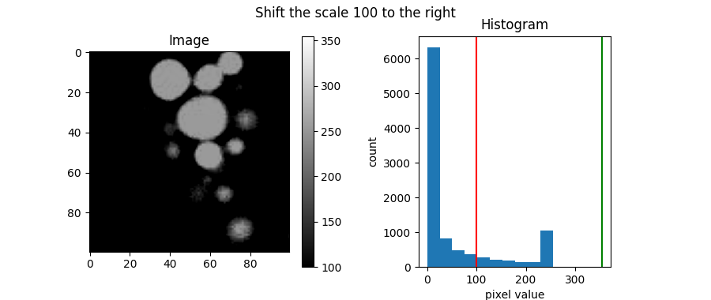
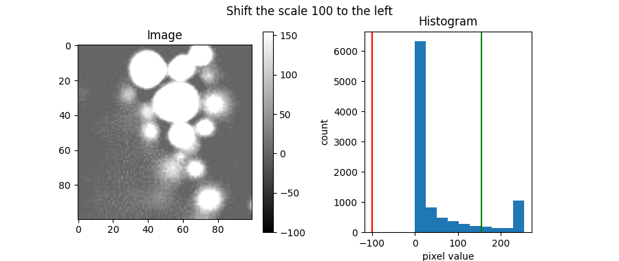
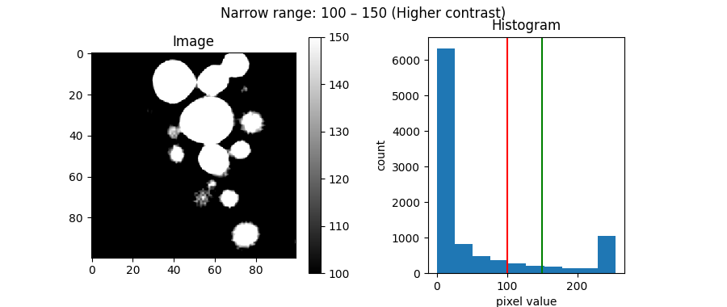
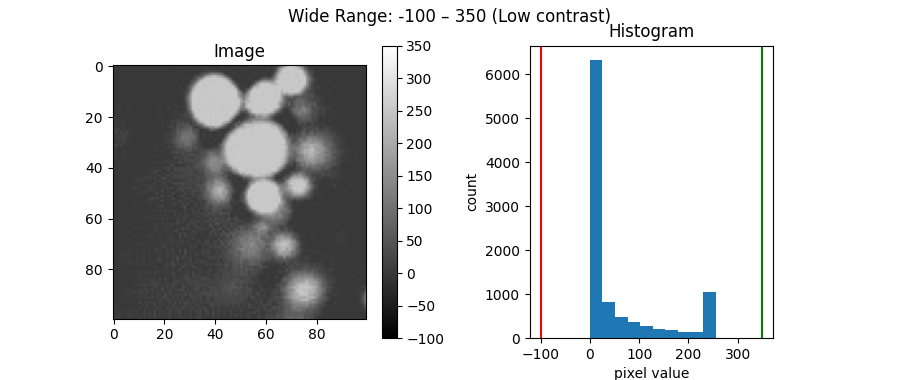
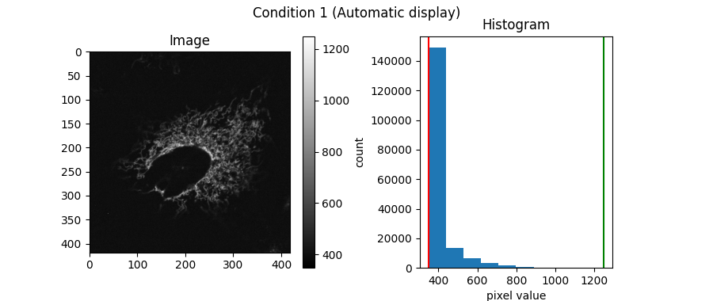
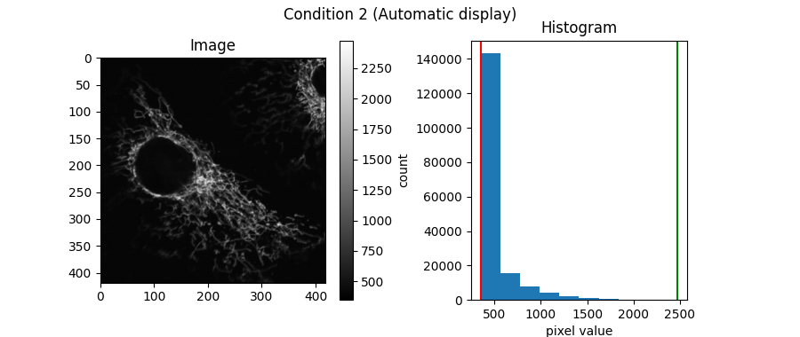
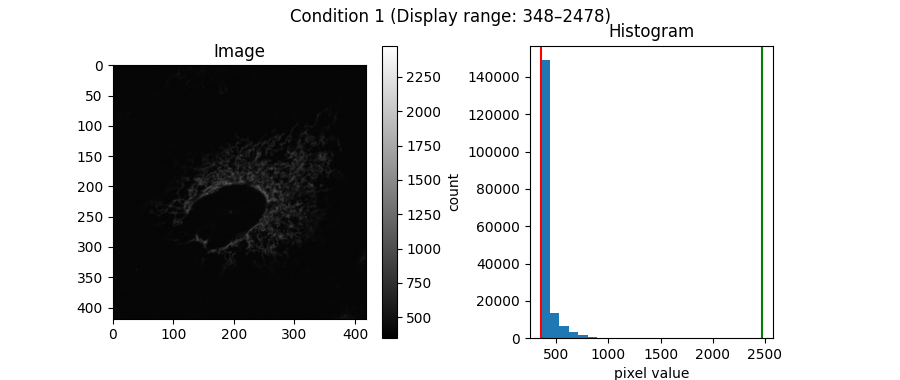
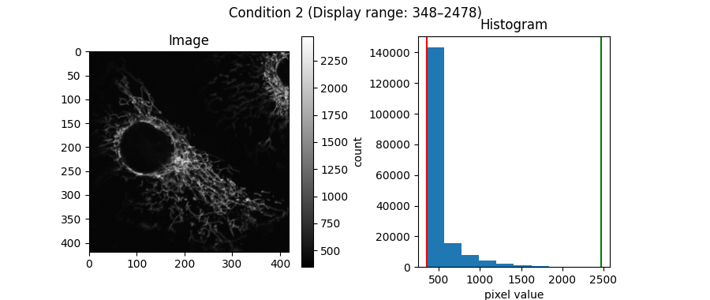
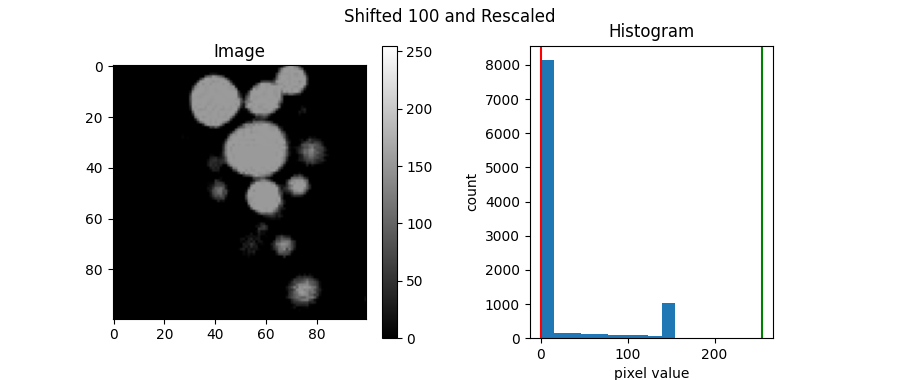
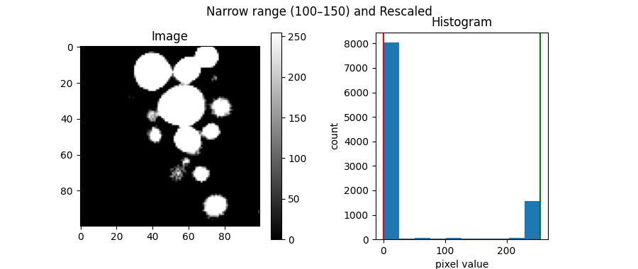

Note
Go to the end to download the full example code.
Brightness and Contrast
Previously, in Single-Channel Image, we learned that we can assign different values to different colors using various color gradients.
We can also change the range of values represented by a color gradient. In grayscale, adjusting this range affects the brightness and contrast of an image.
To show how this works in practice, we’ll use blobs.jpeg as our example image.
from PIL import Image
import numpy as np
import matplotlib.pyplot as plt
blobs = Image.open("images/blobs.jpeg")
blobs = np.array(blobs)
Before we start, let’s create a simple function that displays an image
and its histogram side by side. We can also specify a minimum and
maximum value (vmin and vmax) for displaying the image.
Since we use grayscale as the color gradient, pixels with vmin
value will be displayed as black, and pixels with vmax value
will be displayed as white.
In addition, red and green lines will be drawn on the histogram to indicate
vmin and vmax, respectively.
def show_image_histogram(image, title='', vmin=None, vmax=None):
plt.figure(figsize=(9,3.8))
plt.suptitle(title)
plt.subplot(121)
plt.title('Image')
if vmin is None:
vmin = image.min()
if vmax is None:
vmax = image.max()
plt.imshow(image, cmap='gray', vmin=vmin, vmax=vmax)
plt.colorbar()
plt.subplot(122, box_aspect=1.2)
plt.title('Histogram')
plt.hist(image.flatten())
plt.axvline(vmin, color='red')
plt.axvline(vmax, color='green')
plt.xlim()
plt.xlabel('pixel value')
plt.ylabel('count')
plt.show()
By default, plt.imshow, automatically sets the darkest
color (black) to the minimum pixel value and the brightest color (white)
to the maximum pixel value in the image.
Let’s look at the distribution of these pixel values using the show_image_histogram
function:
show_image_histogram(blobs, title="Default display")
Brightness
In a grayscale image, brighter areas correspond to the upper end of the grayscale gradient. The more pixels mapped to this upper end, the brighter the image appears.
One way to adjust brightness is to shift the display range (scale).
We can do this by changing vmin and vmax.
shift = 100
show_image_histogram(blobs, title=f"Shift the scale {shift} to the right", vmin=blobs.min()+shift, vmax=blobs.max()+shift)
show_image_histogram(blobs, title=f"Shift the scale {shift} to the left", vmin=blobs.min()-shift, vmax=blobs.max()-shift)
- 
- 
Note
Note that if a pixel’s value falls outside the specified display range, it will appear as the color at the closest end of the gradient.
Higher-than-maximum values are shown as white, and lower-than-minimum values are shown as black.
Shifting the scale to the right places fewer pixels at the upper end, decreasing brightness.
Shifting the scale to the left places more pixels at the upper end, increasing brightness.
Contrast
While brightness relates to how many pixels lie at the upper end of the scale, you can think of contrast as how spread out the pixel values are across the scale.
For example, the blobs image we’ve been using already has high contrast. We can see this in the histogram: pixel values are well-spread out, and there are distinct peaks at opposite ends of the scale. This indicates a large difference between dark and bright areas, resulting in high contrast.
One way to change the contrast is by adjusting the grayscale display range.
show_image_histogram(blobs, title=f"Narrow range: 100 – 150 (Higher contrast)", vmin=100, vmax=150)
show_image_histogram(blobs, title=f"Wide Range: -100 – 350 (Low contrast)", vmin=-100, vmax=350)
- 
- 
By narrowing the display range to 100–150, the pixels are forced toward opposite ends (black and white), making the image to have more contrast.
By widening the display range to -100–350, more pixels cluster in the middle of the grayscale. Because there’s less difference between the lightest and darkest displayed values, the image appears to have less contrast.
Practical Example
Here we have two fluorescence images showing mitochondria under two different conditions:
from tifffile import imread
mito_1 = imread('images/mitochondria_1.tif')
mito_2 = imread('images/mitochondria_2.tif')
show_image_histogram(mito_1, title="Condition 1 (Automatic display)")
show_image_histogram(mito_2, title="Condition 2 (Automatic display)")
- 
- 
From the images above, both look similar. However, this is misleading. Because their histograms show different intensity distributions.
Since fluorescence intensity represents the detected fluorophore signal, the mitochondria clearly don’t contain the same amount of fluorophore, even though they may look similar in the above image representations.
A more accurate way to compare them is to use the same display range (brightness and contrast) for both:
# Determine a global min/max from both images
max_val = max(mito_1.max(), mito_2.max())
min_val = min(mito_1.min(), mito_2.min())
show_image_histogram(mito_1,title=f"Condition 1 (Display range: {min_val}–{max_val})",
vmin=min_val, vmax=max_val)
show_image_histogram(mito_2, title=f"Condition 2 (Display range: {min_val}–{max_val})",
vmin=min_val, vmax=max_val)
- 
- 
By using a the same display range, you can see the difference between the two conditions more clearly.
Summary
Brightness and contrast (in this context) are simply how we set the scale or range of values represented by a grayscale gradient.
Important
Warning
Changing the display range does not change the pixel values of the image itself. However, when you save or copy the image after adjusting the display, it may automatically rescale the pixel values, because most image viewers expect a standard range of 0–255 (for 8-bit) or 0–65,535 (for 16-bit).
This is also the case when using ImageJ.
To rescale the pixel values of the image to a standard display range, we can use the following steps:
Clip the pixel values to a specified minimum (
minval) and maximum (maxval).Normalize the clipped values to 0–1.
Scale this range to 0–255 (for 8-bit) or 0–65,535 (for 16-bit).
def rescale(a, minval, maxval, image_type='8-bit'):
clipped = np.clip(a, minval, maxval)
normalized = (clipped - clipped.min()) / (max(clipped.max(), maxval) - min(clipped.min(), minval))
if image_type=='8-bit':
scaled = normalized * 255
return scaled.astype(np.uint8)
elif image_type=='16-bit':
scaled = normalized * 65535
return scaled.astype(np.uint16)
Let’s apply it to our examples above (namely, the image with shifted range to lower the brightness and narrowed range to increase the contrast) and display them with the standard 0–255 range:
shifted = rescale(blobs, minval=blobs.min()+shift, maxval=blobs.max()+shift)
narrow_range = rescale(blobs, minval=100, maxval=150)
show_image_histogram(shifted, title="Shifted 100 and Rescaled", vmin=0, vmax=255)
show_image_histogram(narrow_range, title="Narrow range (100–150) and Rescaled", vmin=0, vmax=255)
- 
- 
Total running time of the script: (0 minutes 1.484 seconds)